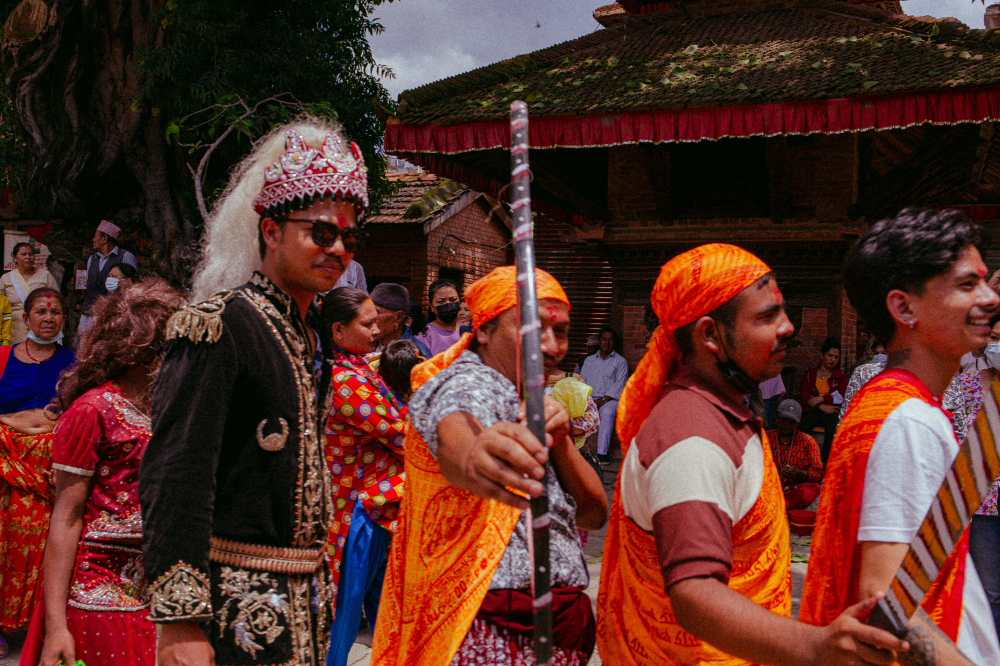

Archive in progress.
A study on America's society, modern culture, and religion.
Photography from the sacred Buddhist temple of Swayambhunath in Kathmandu.
Photographs from the Newari festival of Gai Jatra in Kathmandu Valley.

An ongoing project capturing the changing ages and rhythms of Kathmandu's streets.